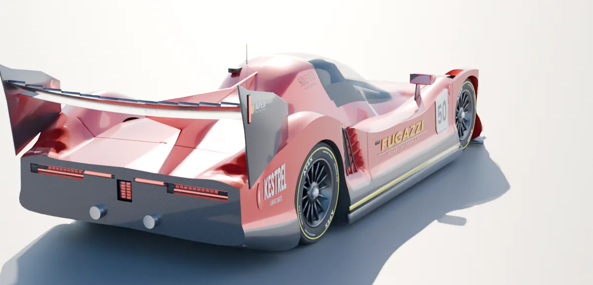
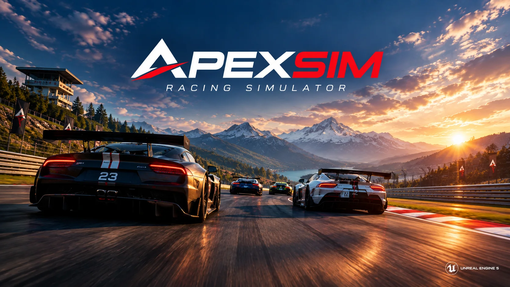
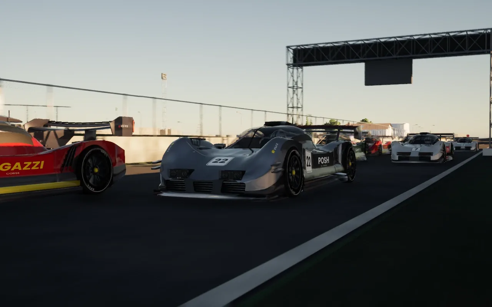
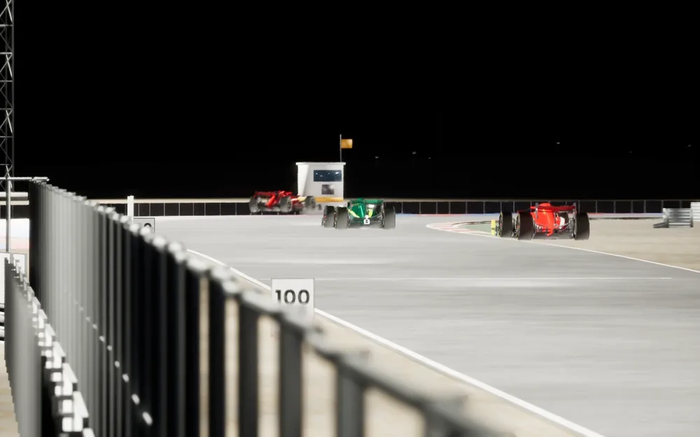
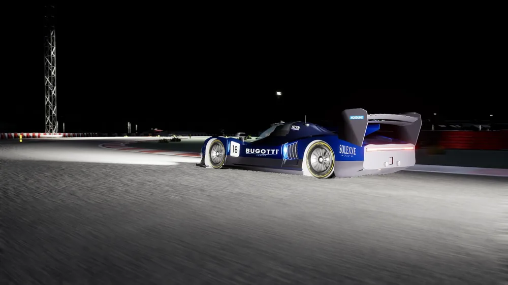
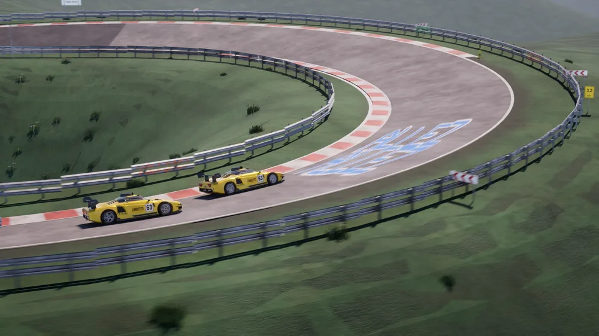

A 420 Hz physics simulation in Rust, rendered in Unreal Engine 5. Seventeen cars, twenty-nine real circuits, and your own Assetto Corsa content on top.
Per-wheel loads, slip-based tyres and suspension geometry, on the same road mesh the game draws.
Three tread zones and a core, pressure by the gas law, wear with a cliff, flat spots you can see.
Ride height and rake, a tow that cuts drag, dirty air that takes the front away.
Any hour of any day; a sky that can change, a road that wets and dries.
Five zones scored by closing speed; dents, lost wings, a smoking engine.
Formation laps, rolling starts, yellow and blue flags, penalties served in the lane.
They pass, defend, plan their stops and drive to the grip they have.
Steering torque from each front tyre: the rim goes light as the grip peaks.
Own Assetto Corsa? The launcher converts the cars and circuits already on your disk: physics, skins, layouts and pit lanes.
How it works →
GT3, prototypes, hypercars, formula cars and eighties rally monsters, each on its own figures. See every car →
Measured centerlines, satellite terrain and furniture from OpenStreetMap, in 21 countries. The longest is 25.9 km. See every circuit →
Every picture is the game, from AI races nobody drove, filmed by its own broadcast cameras.








Download the release, unzip it and run launcher.exe. It starts the game, with a local server if you want one.